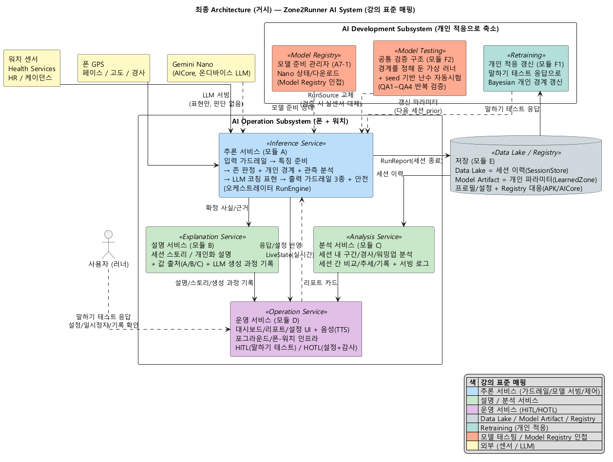
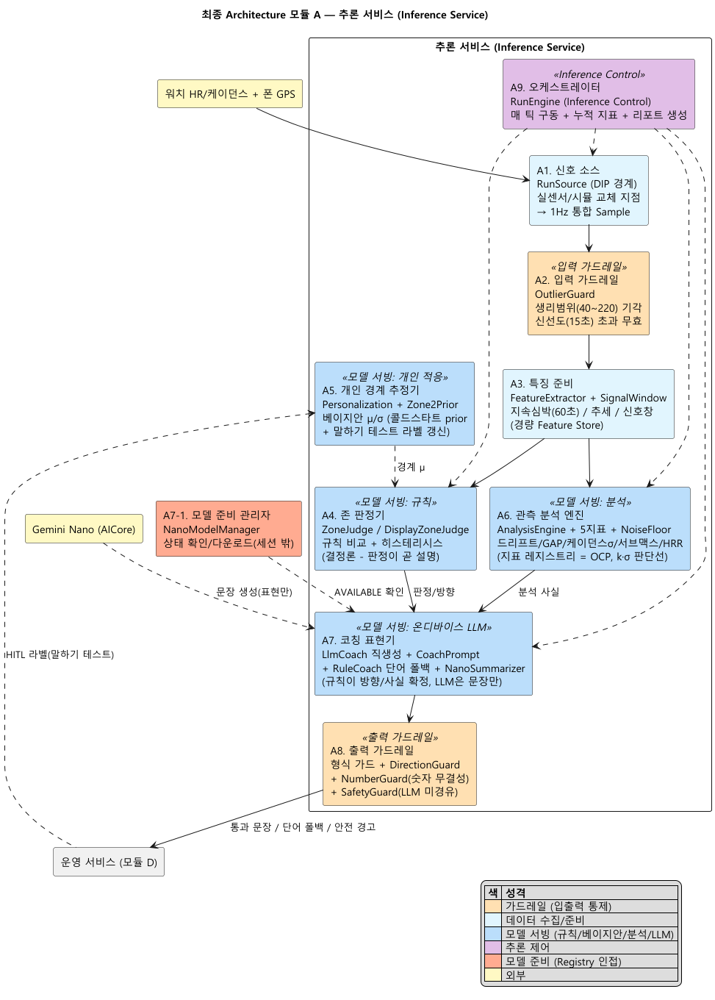
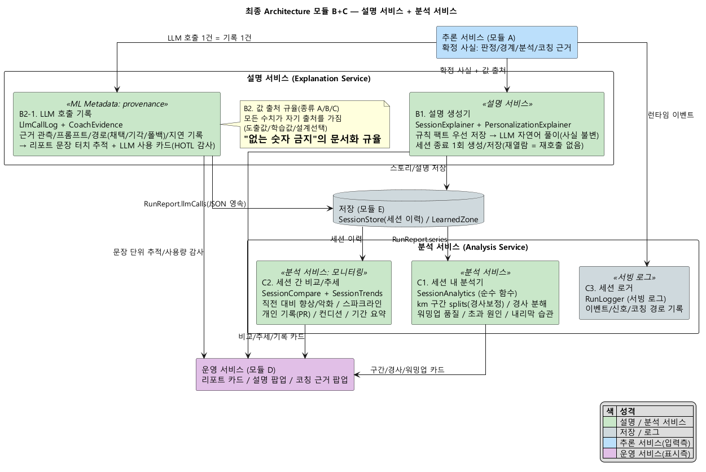
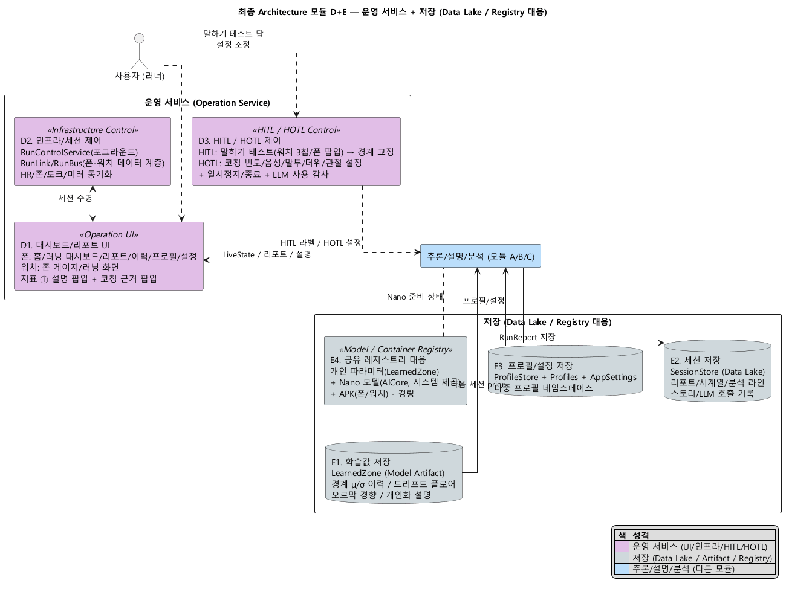
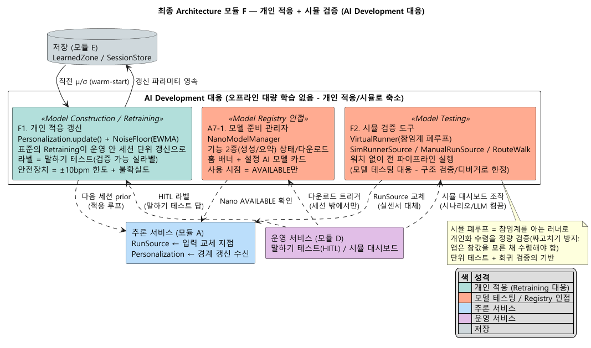

거시 1장 + 모듈별 4장 — 최종 구현 상태(as-built)를 강의 AI System 용어로 표현 — 2026-08-01 v1 — 원고: report/report-013, 도식: arch/diagrams/06*

| 강의 AI System 컴포넌트 | 이 시스템의 구현 | 모듈 |
|---|---|---|
| 입력 가드레일 | OutlierGuard(생리범위/신선도) + 분석 게이팅 | A2 |
| 모델 서빙 | 규칙 판정 + 베이지안 경계 + 관측 분석 엔진 + 온디바이스 LLM | A4~A7 |
| 출력 가드레일 | 형식 가드 + DirectionGuard + NumberGuard + SafetyGuard | A8 |
| 추론 제어 | RunEngine(오케스트레이터) | A9 |
| 설명 서비스 | 세션/개인화 설명 생성 + LLM 프로비넌스 | B |
| 분석 서비스 | 세션 내/세션 간 분석 + 서빙 로그 | C |
| 운영 서비스 + HITL/HOTL | 대시보드/리포트 UI + 말하기 테스트 + 설정/감사 | D |
| Data Lake / Model Artifact | SessionStore(이력) / LearnedZone(개인 파라미터) | E |
| Model Construction / Retraining | 개인 적응 갱신(세션마다 베이지안 + EWMA) | F1 |
| 모델 테스팅 | 시뮬 검증 도구(참임계 가상 러너 폐루프) | F2 |
| Model Registry (인접) | NanoModelManager(모델 상태/다운로드) + AICore/APK | A7-1/E4 |
정체성 한 줄: 표준 대비 운영 쪽이 두껍고 오프라인 학습 쪽이 얇다 — 학습이 운영 안의 개인 적응으로 녹아 있다.

입력에서 출력까지 9컴포넌트: 신호 소스(A1, 실센서/시뮬 교체 지점) → 입력 가드레일(A2) → 특징 준비(A3) → 존 판정(A4)/개인 경계(A5)/관측 분석(A6) → 코칭 표현(A7, 규칙이 확정한 사실로 LLM이 문장만) → 출력 가드레일 3종+안전(A8). 오케스트레이터(A9)가 매초 구동.

설명 생성기(B1)는 판단에 실제로 쓴 사실로 스토리/설명을 만들고(세션 종료 1회 생성/저장), 프로비넌스(B2-1)는 모든 LLM 호출의 근거/프롬프트/경로를 기록해 리포트에서 문장 단위 추적을 만든다. 분석(C)은 세션 내 구간/경사/워밍업과 세션 간 비교/추세/기록을 도출한다.

운영(D)은 화면/음성 UI + 폰-워치 인프라 + 사람의 개입 통로(HITL=말하기 테스트, HOTL=설정/감사). 저장(E)은 Data Lake(세션 이력) + Model Artifact(개인 파라미터) + 프로필/설정 + Registry 대응(APK/AICore, 경량).

표준의 오프라인 대량 학습이 없는 대신 — 개인 적응 갱신(F1)이 운영 안에서 세션마다 돌고(Retraining 대응), 시뮬 검증 도구(F2)가 참값 없는 조건의 검증을 맡으며(모델 테스팅 대응), 모델 준비 관리자(A7-1)가 Nano 상태/다운로드를 관리한다(Model Registry 인접).
| DP | QA | 이 아키텍처의 어느 단면인가 | 카운터(2안) |
|---|---|---|---|
| DP1 | 설명용이성 | 투명 판정(A4/A5) + 설명 서비스(B) + 프로비넌스(B2-1) | 사전학습 블랙박스 + 사후 설명 |
| DP2 | 제어가능성 | 구조적 격리(A7) + 출력 가드 3종(A8) + 폴백 + HITL/HOTL(D3) + 감사 | LLM 판단 위임 |
| DP3 | 기능적응성 | 개인 경계 추정(A5) + 적응 루프(F1/E1) + 말하기 테스트(D3) | 오프라인 재학습 개인화 |
| DP4 | 강건성 | 입력 가드레일(A2) + 이중 기준 판정(A4) + 통계 평탄화(A6) + 소스 폴백(A1) | 즉시 반응 판정 |
| DP5 | 테스트가능성 | 소스 추상화(A1) + 시뮬 검증(F2) + 순수 로직 분리 | 실기기 결합 검증 |